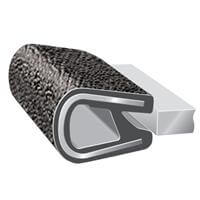

-
Thank You, Pace.
Adam- I have done one set for the 2+2 but, I can't remember where I put the shades I used for my template. Anyway, I have ordered the plastic and will pick it up Monday.
However, I will be on vacation at Myrtle Beach June 28th- July 5th with my wife for our twenty- five year anniversary. If anyone needs them now, please let me know. Thanks.Everything is Meaningless. -
Sounds good Jeff. Enjoy your vacation and anniversary! We can talk when you get back.86na - BlueZ
Shiro #366 - Kouki Monster
85t - Mr Tickles -
Should we try to get a group buy together for these? I know I definitely need a set.Butter (credit where credit is due): "You have this "gift" where you can make cooking a Hot Pocket seem like you need a certain wavelength microwave and involve brown mustard." -
I have the Lexan presently to make two or three sets. Adam Vann is first in line if he is ready.Everything is Meaningless. -
However, I haven't found my 2+2 templates, yet.Everything is Meaningless. -
Originally posted by PulseCode View PostWell im down for a 2 seater set when ever you are available to make them. I can do all the upholstery/covering and finishing work. You just make them fitOriginally posted by PulseCode View Post
If you do find the 2+2 template, let me know as I need a set of those too86na - BlueZ
Shiro #366 - Kouki Monster
85t - Mr Tickles -
I will discount the price by $25 if you want to finish the down facing side. They will still have the Neoprene perimeter damping strips installed on the mating glass side to eliminate rattles. Thanks. I'm looking for my template fof the 2+2.Everything is Meaningless. -
Ok. Get them cut and the tabs mounted to install them. Lets talk about the Neoprene perimeter damping. Its something I want, however I have an idea on how I am going to finish them and want to ensure the best method to apply.Originally posted by PulseCode View Post
Let me know when you have them cut and fitted. I will give you a call and we can discuss to make sure we are on the same page.
I am replacing my headliner, so in hopes I was going to match the material finish on the shades. I need to figure out how I am going to do the edges on the shade.
Ideally I will match rubber finish with products like these depending on the thickness.

Also with the new seats being black in the the blue interior, I may go black finish on the shades to tie in the "Bruise" or Black and Blue theme that will do down.86na - BlueZ
Shiro #366 - Kouki Monster
85t - Mr Tickles -
Whatever is used for the cosmetic covering should ideally be preshrunk first. This can be done by leaving the fabric inside the hatch of your car for about a week or more.
In full sun with the windows rolled up, lay the fabric down face up to absorb heat and light. I imagine washing with hot water and drying on full heat would work similarly (provided that the fabric can be safely washed).Everything is Meaningless. -
Adam, your first set are done. Let me know if you would like me to ship this set out Mon. or just wait and send you both sets together.
I do have someone lined up nearby with a set of 2+2 if I can't locate mine. Thank You. Jeff Z.Everything is Meaningless. -
Jeff,Originally posted by PulseCode View Post
We can hold off if you got a line on 2+2 set as well. I am in no rush as either are having some work done.
-Adam86na - BlueZ
Shiro #366 - Kouki Monster
85t - Mr Tickles -
Just a heads up for anyone thinking about these. It has been three years since this thread was started and material costs have gone up.
I have two sets available at the old price of $150 shipped. After these have sold the cost will be $175 shipped for a finished set.
The two sets available are not yet finished with interior fabric. If you want to finish them yourself they are $125/set shipped. Thank You.Everything is Meaningless. -
ONE last set available (at $150 shipped) for anyone else who might be watching these.
Adam Vann- your second pair of shades (2+2) will be finished by Thurs. Thanks.Everything is Meaningless. -
New pics for those interested.Everything is Meaningless.

Copyright © 2006–. All rights reserved. Privacy Policy